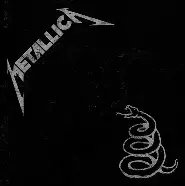

proyecto xavi
HOLA MUNDO
- metallica 1
- sepultura 2
- dio 3
actuales
- James Hetfield
- Lars Ulrich
- Kirk Hammett
- Robert Trujillo
album actual
El "Black Album" de Metallica, lanzado el 12 de agosto de 1991, es considerado uno de los discos más importantes de la historia del metal. Este álbum, que ha vendido más de 30 millones de copias en todo el mundo, marcó un cambio significativo en el género al adoptar un sonido más pulido y accesible, alejándose del thrash metal crudo de los ochenta. Las canciones del álbum, como "Enter Sandman", "Nothing Else Matters", "Sad But True" y "The Unforgiven", se han convertido en himnos que siguen sonando en estadios y radios. La portada negra del álbum fue una declaración de principios, buscando que la gente se concentrara en la música en lugar de en el diseño. El álbum debutó en el número 1 del Billboard 200 y redefinió lo que significaba ser una banda de metal. .
Black Album - Disco Metallica
